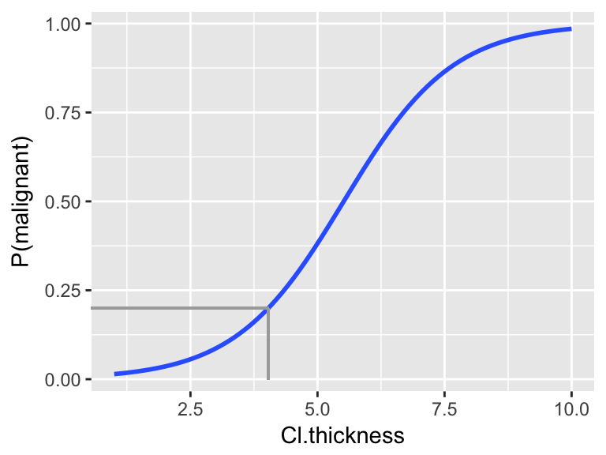

4.7 Day 5: Logistic Regression
Getting started:
As you settle in,
install the
mlbenchpackagestart a new Rmd and load the following packages at the top.
```{r warning = FALSE, message = FALSE} library(ggplot2) library(dplyr) library(fivethirtyeight) library(mlbench) ```
Today’s plan:
Discuss Day 4 homework & tie up any other loose ends
Extend the previous module concepts in a new model setting: logistic regression
Exploratory data analysis and group mini-project
4.7.1 Classification
Thus far, we’ve focused on regression tasks where we’ve examined the association between a quantitative response \(y\) and predictors (\(x_1,...,x_k\)):

Classification tasks are required when we want to examine the association between a categorical response \(y\) and predictors (\(x_1,...,x_k\)). For each of the classification tasks below:
specify response variable \(y\) and its levels / categories
specify predictors \(x\) that would be useful in our classification
disease classification
Note: Models are a powerful tool in diagnosing disease. Later in this activity we’ll develop models that can be used to diagnose breast cancer. Though a sensitive topic, this is an important, broad area of application. Throughout, it’s important to keep in mind that each data point corresponds to a real person.
spam filters
Spam or not spam?
Spam or not spam?
4.7.2 Motivating Example
In 1986, NASA’s Challenger shuttle exploded 73 seconds after liftoff, killing all 7 crew members on board. An investigation found that an “O-ring” failure was the cause. At the time, NASA used six O-rings (seals) in each shuttle to prevent hot gases from coming into contact with fuel supply lines.
The temperature on the day of the Challenger launch was a chilly 31o F, much colder than the launch temperatures of all previous NASA flights which ranged from 53 to 81o F. Prior to lift-off, engineers warned of potential O-ring failure under such low temperatures. However, upon analyzing data on the temperature and O-ring performance from the 23 previous flights, NASA thought it was safe to go forward. Let’s examine their data. Each case in the oring data set represents a single O-ring for one of the 23 flights, thus there are 6*23=138 cases in total.
oring <- read.csv("https://www.macalester.edu/~ajohns24/data/NASA.csv")
head(oring, 3)
## Broken Temp Flight
## 1 1 53 1
## 2 1 53 1
## 3 0 53 1On the left is an ordinary regression model of Broken (whether the O-ring broke) by Temp (temperature on the day of the launch). On the right is a logistic regression model of the probability of Broken by Temp. Explain why the logistic model is preferable.
Ordinary vs Logistic Regression
- ordinary regression assumptions
\(y\) is a quantitative response variable with
\[y \stackrel{ind}{\sim} N(\beta_0 + \beta_1 x_1 + \cdots + \beta_kx_k, \sigma^2)\] Equivalently, \[y = \beta_0 + \beta_1 x_1 + \cdots + \beta_kx_k + \varepsilon \;\;\; \text{ where } \varepsilon \stackrel{ind}{\sim} N(0, \sigma^2)\]
- logistic regression assumptions
\(y\) is a binary response variable: \[y \stackrel{ind}{\sim} \text{Bernoulli}(p(x)) \;\;\; \text{ i.e. } y = \begin{cases} 1 & \text{ w/ probability } p(x) \\ 0 & \text{ w/ probability } 1-p(x) \\ \end{cases}\] where \[\log \left(\frac{p(x)}{1-p(x)} \right) = \log \left(\text{odds}(x) \right) = \beta_0 + \beta_1 x_1 + \cdots + \beta_kx_k\] equivalently \[p(x) = \frac{e^{\beta_0 + \beta_1 x_1 + \cdots + \beta_kx_k}}{1 + e^{\beta_0 + \beta_1 x_1 + \cdots + \beta_kx_k}}\]
NOTE: in statistics, “log” is the natural log (ln) by default
Generalized Linear Models
Logistic regression and (ordinary) linear regression are both special cases of the broader set of “generalized linear models”. In general, all generalized linear models assume that the model trend, i.e. the expected value of the response \(E(Y)\), can be “linked” to a linear combination of predictors via some link function \(g()\): \[\begin{split} g(E(Y)) & = X\beta \\ E(Y) & = g^{-1}(X\beta) \\ \end{split}\] In the case of ordinary linear regression, \(g()\) is the identity function: \[Y \sim N(X\beta, \sigma^2) \;\;\; \text{ with } \;\;\; E(Y) = X\beta\] In the case of logistic regression, \(g()\) is the logit function: \[Y \sim Bern(p) \;\;\; \text{ with } \;\;\; log\left(\frac{E(Y)}{1-E(Y)}\right) = log\left(\frac{p}{1-p}\right) = X\beta\]
4.7.3 Bechdel test
This cartoon by Alison Bechdel inspired the “Bechdel test”. A movie passes the test if it meets the following criteria:
.jpg){kind=link}
- there are \(\ge 2\) female characters
- the female characters talk to each other
- at least 1 time, they talk about something other than a male character
We’ll work with the bechdel data in the fivethirtyeight package:
library(fivethirtyeight)
data(bechdel)
?bechdelThe binary variable records whether each movie is a FAIL or PASS on the Bechdel test. Define the corresponding response \[y = \begin{cases} 1 & \text{ PASS (with probability $p(x)$)} \\
0 & \text{ FAIL (with probability $1-p(x)$)} \\
\end{cases}\]
NOTE: By default, RStudio assigns the first alphabetical group (FAIL) to the reference category “0”.
- Logistic regression of
binarybyyearConstruct the logistic regression model using the
glm()function.Notes:binary_mod <- glm(as.factor(binary) ~ year, bechdel, family="binomial") summary(binary_mod)- We’ve worked with
glm()before! To use it for logistic regression we specifyfamily="binomial"(which is a generalization of “Bernoulli”)
- Since
binaryis a character variable, we have to specify that it should be treatedas.factor.
- We’ve worked with
The coefficients in the model
summary()correspond to the log-odds model. Write down the corresponding model formula: \[\text{log(odds of passing the test)} = \hat{\beta}_0 + \hat{\beta}_1 \text{year}\]
Subsequently, translate the model on theoddsandprobabilityscales:
\[\begin{split} \text{odds of passing} & = ??? \\ \text{P(pass)} & = ??? \\ \end{split}\]
Logistic predictions & model visualizations
We now have the same model ofbinarybyyear, but on 3 different scales.For each movie in
bechdel, use these 3 models to make predictions for the log(odds), odds, and probability that the movie passes the Bechdel test.# predictions on probability scale (stored as the fitted.values) prob_pred <- binary_mod$fitted.values # predictions on odds scale odds_pred <- ___ # predictions on log(odds) scale log_pred <- ___ # include the 3 sets of predictions in the data bechdel <- bechdel %>% mutate(log_pred=log_pred, odds_pred=odds_pred, prob_pred=prob_pred)Visualize & interpret these 3 models. NOTE: All of these models look fairly linear across the observed years. However, the probability model would take on a “s” shape if we zoomed out.
#Plot the log(odds) model ggplot(bechdel, aes(x=year, y=log_pred)) + geom_smooth(se=FALSE) + labs(y="log(odds of passing the test)") #Plot the odds model ggplot(bechdel, aes(x=year, y=odds_pred)) + geom_smooth(se=FALSE) + labs(y="odds of passing the test") #Plot the probability model ggplot(bechdel, aes(x=year, y=prob_pred)) + geom_smooth(se=FALSE) + labs(y="probability of passing the test") #We could also do this without calculating the predictions first!! ggplot(bechdel, aes(x=year, y=(as.numeric(as.factor(binary))-1))) + geom_smooth(method="glm", method.args=list(family="binomial"), se=FALSE) + labs(y="probability of passing the test") #...and zoom out to see the s shape ggplot(bechdel, aes(x=year, y=(as.numeric(as.factor(binary))-1))) + geom_smooth(method="glm", method.args=list(family="binomial"), se=FALSE, fullrange=TRUE) + labs(y="probability of passing the test") + lims(x=c(1800,2200))“Fast and Furious 6” premiered in 2013. The predicted log(odds), odds, and probability that this movie would pass the Bechdel test are below. It might come as a surprise that Fast & Furious did pass the Bechdel test. Calculate the residual / prediction error for this movie.
bechdel %>% filter(title == "Fast and Furious 6") %>% select(log_pred, odds_pred, prob_pred) ## # A tibble: 1 x 3 ## log_pred odds_pred prob_pred ## <dbl> <dbl> <dbl> ## 1 0.00294 1.00 0.501
Interpreting logistic coefficients
The model of the log(odds) of passing the test is linear. Thus we can interpret theyearcoefficient as a slope on the log(odds) scale:
Each year, the log(odds) of movies passing the Bechdel test increase by0.020647on average.The problem with this interpretation is that nobody really thinks on log(odds) scales!
Using the logistic regression notation that \(\text{log(odds)} = \hat{\beta}_0 + \hat{\beta}_1 x\), we can prove that \(\hat{\beta}_1\) can be interpreted on the odds scale as follows: \[100(e^{\hat{\beta}_1} - 1) = \text{ estimated percentage change in odds per 1 unit increase in $x$}\] With this in mind, reinterpret the
yearcoefficient in a meaningful way. (If you have time, prove that \(100(e^{\beta_1}−1)\) can be interpreted as the percentage change in odds associated with a 1 unit increase in \(x\).)What do you conclude from the hypothesis test in the
yearrow?
Logistic regression with a categorical predictor
Define abigbudgetwhich categorizes movies’ budget (in 2013 inflation adjusted dollars) into 2 groups: movies with budgets that are greater than the median (TRUE) and those without (FALSE):bechdel <- bechdel %>% mutate(bigbudget=(budget_2013 > median(budget_2013)))Incorporate
bigbudgetinto our model with an interaction term. What’s the take-home message from the coefficients & their corresponding hypothesis tests?bechdelmod_2 <- glm(as.factor(binary) ~ year * bigbudget, bechdel, family="binomial") summary(bechdelmod_2)Plot the model!
#store predictions on probability scale bechdel <- bechdel %>% mutate(probPredictions = bechdelmod_2$fitted.values) #plot ggplot(bechdel, aes(x=year, y=probPredictions, color=bigbudget)) + stat_smooth(se=FALSE) + labs(y="probability of passing the Bechdel test")
Details
The concept of measuring a “residual” on any single case doesn’t quite make sense in a logistic model. On each individual response, we observe \(y \in \{0,1\}\) yet our predictions are on the probability scale. Thus, logistic regression requires different strategies for coefficient estimation (the “least squares” strategy minimizes the sum of squared residuals!) and measuring model quality (\(R^2\) is calculated from the variance of the residuals!).
Building the model: calculating coefficient estimates
A common strategy is to use iterative processes to identify coefficient estimates \(\hat{\beta}\) that maximize the likelihood function \[L(\hat{\beta}) = \prod_{i=1}^{n} p_i^{y_i}(1-p_i)^{1-y_i} \;\; \text{ where } \;\; log\left(\frac{p_i}{1-p_i}\right) = x_i^T \hat{\beta}\]Measuring model quality
We can evaluate logistic models relative to their ability to classify cases into binary categories using CV, sensitivity, & specificity (which we’ll do below).
4.7.4 Classifying cases
In the remainder of this activity, we’ll use logistic regression to diagnose a breast cancer tumor as malignant (cancerous) or benign (non-cancerous). Traditionally, this requires invasive surgical procedure. “Fine needle aspiration,” which only draws a small sample of tissue, provides a less invasive alternative. To assess the effectiveness of this procedure, tissue samples were collected from 699 patients with potentially cancerous tumors. For each sample, a doctor observed and rated the tissue on a scale from 1 (normal) to 10 (most abnormal) with respect to a series of characteristics.
data("BreastCancer")
?BreastCancer
head(BreastCancer, 3)
## Id Cl.thickness Cell.size Cell.shape Marg.adhesion Epith.c.size
## 1 1000025 5 1 1 1 2
## 2 1002945 5 4 4 5 7
## 3 1015425 3 1 1 1 2
## Bare.nuclei Bl.cromatin Normal.nucleoli Mitoses Class
## 1 1 3 1 1 benign
## 2 10 3 2 1 benign
## 3 2 3 1 1 benign
Let’s use logistic regression to model tumor Class by Cl.thickness alone.
#note that Cl.thickness isn't a numeric vector
#replace it with a numeric copy
class(BreastCancer$Cl.thickness)
## [1] "ordered" "factor"
BreastCancer <- BreastCancer %>%
mutate(Cl.thickness=as.numeric(Cl.thickness))
mod_1 <- glm(Class ~ Cl.thickness, BreastCancer, family="binomial")
ggplot(BreastCancer, aes(x=Cl.thickness, y=(as.numeric(as.factor(Class))-1))) +
geom_smooth(method="glm", method.args=list(family="binomial"), se=FALSE) +
labs(y="P(malignant)")
Suppose a patient’s tumor has a thickness measurement of 8. We can use the model to estimate the probability that the tumor is malignant. Based on these calculations, how would you classify / diagnose this patient?
# log(odds) prediction predict(mod_1, newdata=data.frame(Cl.thickness=8), type="link") ## 1 ## 2.324 # probability prediction predict(mod_1, newdata=data.frame(Cl.thickness=8), type="response") ## 1 ## 0.9108
Using logistic regression for classification
For a new case with predictors \(x^*\), we can use the logistic regression model to classify \(y^*\):
- \(p(x^*) \ge c\) \(\Rightarrow\) classify \(y^*\) as 1
- \(p(x^*) < c\) \(\Rightarrow\) classify \(y^*\) as 0
The quality of these classifications depends upon our choice of cut-off parameter \(c\) and provides a measure of the model quality itself.
- Experiment
The
mod_1fittedvalues contain the predictions, P(malignant), for all patients in the dataset. Store these predictions asprob_pred& store the true test case classes astrue_class:prob_pred <- mod_1$fitted true_class <- ___Suppose we use a proability cut-off of 0.5 to classify tumors as malignant. Examine the following results that compare the classifications to the
true_class. Note:TRUEmeans that a tumor was classified as “malignant” by our 0.5 cut-off rule.raw_table <- table(true_class, prob_pred >= 0.5) raw_table prop.table(raw_table, margin=1)Play around with the cut-off: which cut-off (eg: 0.5) provides the “best” classifications? NOTE: writing a function might be an efficient approach to trying out different cut-offs.
Sensitivity vs Specificity
Model predictions and classifications aren’t perfect. We can measure the quality of a binary classification tool (eg: logistic regression) using sensitivity and specificity: \[\begin{split} \text{overall accuracy} & = \text{probability of making a correct classification} \\ \text{sensitivity} & = \text{true positive rate}\\ & = \text{probability of correctly classifying $y=1$ as $y=1$} \\ \text{specificity} & = \text{true negative rate} \\ & = \text{probability of correctly classifying $y=0$ as $y=0$} \\ \text{1 - specificity} & = \text{false positive rate} \\ & = \text{probability of classifying $y=0$ as $y=1$} \\ \end{split}\]
In the experiment above, we saw a trade-off: increasing the sensitivity of our classification rule results in a decreasing specificity (and vice versa)
sensitivity vs specificity
For the following scenarios, which is more important: increased sensitivity or increased specificity? What factors are you considering in your answer?Classify a room as having carbon monoxide (\(y=1\)) or not (\(y=1\)).
Classify an email as spam (\(y=1\)) or not spam (\(y=0\)).
Classify a tumor as malignant (\(y=1\)) or benign (\(y=0\)).
Continuing with
mod_1:coef(summary(mod_1)) ## Estimate Std. Error z value Pr(>|z|) ## (Intercept) -5.1602 0.37795 -13.65 1.937e-42 ## Cl.thickness 0.9355 0.07377 12.68 7.521e-37Consider classifying tumors using a 0.5 cut-off:
- if P(malignant) \(\ge 0.5\) \(\Rightarrow\) classify as malignant
- if P(malignant) \(< 0.5\) \(\Rightarrow\) classify as benign
Translate this classification rule into one based on the actual
Cl.thicknessmeasurements:- if
Cl.thicknessis ??? \(\Rightarrow\) classify as malignant - if
Cl.thicknessis ??? \(\Rightarrow\) classify as benign
HINT:Use the logistic model to detemine the
Cl.thicknessvalue that corresponds to a probability prediction of 0.5. You can also visualize this value on the following plot.Check out a density plot of
Cl.thicknessbyClasswith a vertical line drawn at the thickness cut-off you derived above: In the experiment, you calculated that this rule had a corresponding sensitivity of 0.68 & specificity of 0.95. On a scratch piece of paper, shade in the areas on the side-by-side density plots that correspond to the sensitivity and specificity.
In the experiment, you calculated that this rule had a corresponding sensitivity of 0.68 & specificity of 0.95. On a scratch piece of paper, shade in the areas on the side-by-side density plots that correspond to the sensitivity and specificity.
- Given the consequences of misclassifying a malignant tumor as benign, we might find the sensitivity of the above classification rule to be too low. To increase sensitivity, we could decrease the probability cut-off used to classify a tumor as malignant from 0.5 to 0.2.
- Translate the 0.2 probability classification rule into one based on the actual
Cl.thicknessmeasurements:- if
Cl.thicknessis ??? \(\Rightarrow\) classify as malignant - if
Cl.thicknessis ??? \(\Rightarrow\) classify as benign
You can visualize this value on the following plot.
- if
Check out a density plot of
Cl.thicknessbyClasswith a vertical line drawn at the thickness cut-off you derived above: Shade in the regions corresponding to the sensitivity and specificity of this rule.
Calculate the sensitivity and specificity of this classification rule.
COMMENT: In comparison to using 0.5 as our cut-off, you should notice that we increased sensitivity at the cost of decreasing specificity. - Translate the 0.2 probability classification rule into one based on the actual
4.7.5 Classification Using >1 Predictor
As you might imagine, classification improves with more information. That is, we can classify tumors with higher accuracy if we consider two measurements as opposed to just one. For example, consider classifying tumor status by both Cl.thickness and Cell.size. Note that the cases have been jittered in order to observe multiple cases at each coordinate:
# First make Cell.size numeric
BreastCancer <- BreastCancer %>%
mutate(Cell.size=as.numeric(Cell.size))
ggplot(BreastCancer, aes(x = jitter(Cl.thickness,0.75), y = jitter(Cell.size,0.75), color = Class)) +
geom_point() +
labs(x="Cl.thickness", y="Cell.size")
Modeling
ClassbyCl.thicknessandCell.size
Fit the following logistic model of tumorClassbyCl.thicknessandCell.size:mod_2 <- glm(Class ~ Cl.thickness + Cell.size, BreastCancer, family="binomial") summary(mod_2)- Use
mod_2with a probability cut-off of 0.5 to define a classification border between the benign and malignant classification groups. To this end, specify the correct values foraandbbelow:- If
Cell.size\(\ge\)a+bCl.thickness, conclude the tumor is malignant.
- If
Cell.size\(<\)a+bCl.thickness, conclude the tumor is benign.
- If
Adapt the code below to include your classification border on a plot of the observed data. This line represents the “best” linear separation of the benign and malignant groups. In examining this plot, what limitations do you notice?
ggplot(BreastCancer, aes(x = jitter(Cl.thickness, 0.75), y = jitter(Cell.size, 0.75), color = Class)) + geom_point() + geom_abline(intercept = ___, slope = ___)Estimate the sensitivity and specificity of this classification rule. NOTE: These should be higher than for the model with
Cl.thicknessalone!prop.table(table(BreastCancer$Class, mod_2$fitted >= 0.5), margin = 1)
- Use
Consider a final model:
# Convert all predictors to numeric. Remove 1st & 7th variables. BreastCancer[,2:10] <- data.frame(apply(BreastCancer[2:10], MARGIN = 2, FUN = as.numeric)) BreastCancer <- BreastCancer[,-c(1,7)] # Model Class by all remaining variables mod_3 <- glm(Class ~ ., data = BreastCancer, family = "binomial")Calculate the sensitivity & specificity for
mod_3.Thus far, we’ve calculated in-sample sensitivity & specificity for
mod1,mod_2, &mod_3. To get a better sense of how well these models generalize to new patients, we can calculate and compare their 10-fold CV errors. If you had to pick 1 of these 3 models, which would it be and why?library(boot) cv.glm(BreastCancer, mod_1, K = 10)$delta cv.glm(BreastCancer, mod_2, K = 10)$delta cv.glm(BreastCancer, mod_3, K = 10)$delta